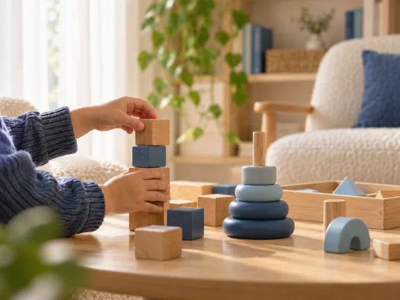
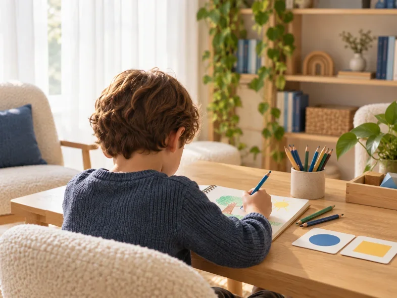
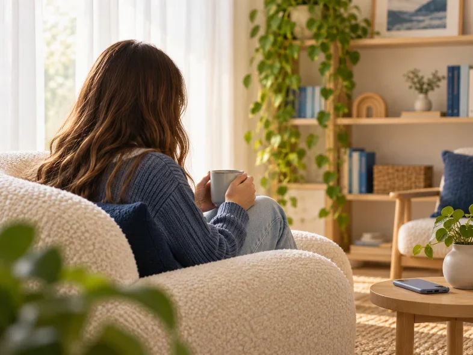
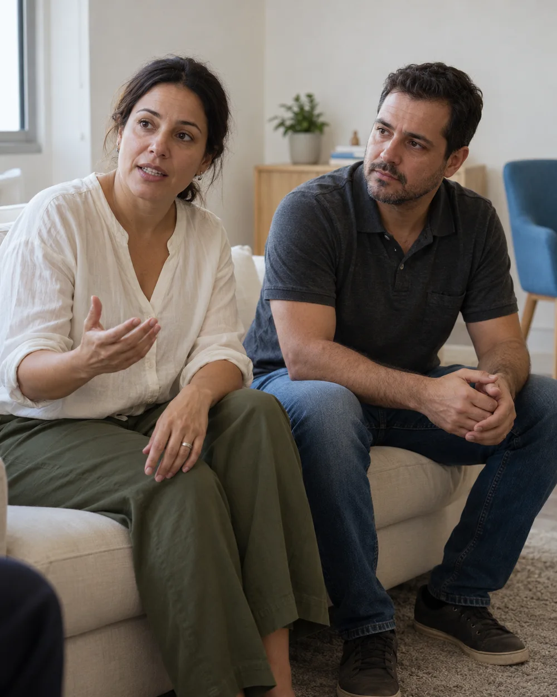
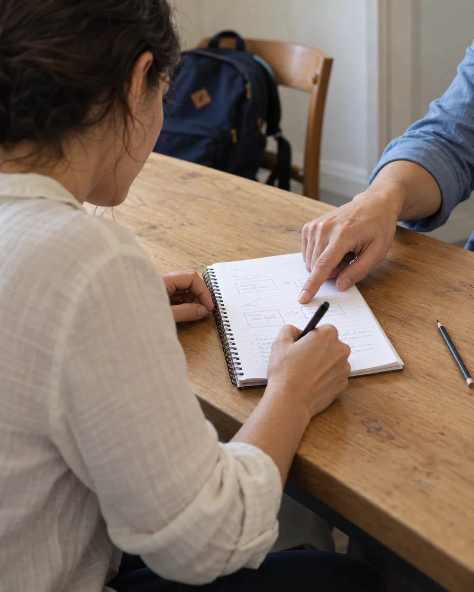

Emoções e comportamento
Birras intensas, choro frequente e dificuldade com regras e rotinas da casa.
“Qualquer frustração vira uma crise.”
Tatiane André Maiorga Psicóloga infantil e para adolescentes
Para pais de crianças e adolescentes com dificuldades emocionais, de comportamento ou na escola. Psicoterapia e avaliação neuropsicológica, com a família orientada em cada etapa.
Falar sobre meu filhoTalvez seja o seu caso
É comum ter dúvida sobre o que é uma fase e o que pede acompanhamento. Veja se alguma destas situações parece com o que acontece na sua casa.
Birras intensas, choro frequente e dificuldade com regras e rotinas da casa.
Medo de ficar longe dos pais, pesadelos e ansiedade antes de provas.
Falta de concentração, queda nas notas ou um pedido da escola para investigar.
Afastamento da família, tristeza, insegurança com a imagem ou bullying.
Separação, luto, mudança de casa ou de escola e a chegada de um irmão.
Você não precisa chegar com um diagnóstico. Entender o que seu filho precisa é justamente o começo do trabalho.
Tirar dúvidas
Como funciona
Do primeiro contato ao primeiro atendimento, em três etapas. Sem formulário e sem precisar explicar tudo por escrito.
Etapa 01
Pelo WhatsApp, quando puder. Basta dizer a idade do seu filho. Não é preciso contar o caso por mensagem.
Etapa 02
Eu explico valores, modalidade (presencial ou online) e os horários disponíveis. Você decide com calma.
Etapa 03
No primeiro atendimento, escuto você e começo a conhecer seu filho. A partir daí, definimos juntos os próximos passos e como a família participa.
Atendimento particular Presencial em SP e online
Para cada fase
Cada idade traz desafios diferentes. O jeito de conduzir o atendimento muda junto com seu filho.

Brincar é a forma de se expressar.
O processo é lúdico: brincadeiras e jogos ajudam a criança a mostrar o que sente. Os pais são orientados de perto para lidar com a rotina em casa.

A escola começa a pedir mais.
Recursos da TCC adaptados à idade e, quando indicada, avaliação neuropsicológica. A família participa e recebe orientação para apoiar em casa e na escola.

Um espaço próprio, com privacidade.
Conversas e estratégias para lidar com o que está difícil. A família participa de forma combinada, respeitando a privacidade do adolescente.
A família no processo
Cuidar de uma criança ou adolescente traz situações para as quais nem sempre há respostas prontas. No meu trabalho, pais e responsáveis fazem parte do processo: suas observações ajudam a entender o que acontece no dia a dia.
Um espaço para falar das dificuldades e entender as necessidades do seu filho.
Caminhos para lidar com os desafios da rotina, considerando a realidade da sua casa.
Você leva o suporte para os momentos que acontecem fora das sessões.
A participação da família respeita a idade, as necessidades e a privacidade de quem está em atendimento.




Quem vai cuidar do seu filho
A Psicologia é minha segunda graduação. Cheguei a ela por uma transição de carreira, movida pelo desejo de cuidar. Hoje atendo crianças e adolescentes com a Terapia Cognitivo-Comportamental. Com os pequenos, brincadeiras e jogos fazem parte do processo, e os pais participam com escuta e orientação para o dia a dia.
“Eu trato cada criança ou adolescente como eu queria que o meu filho fosse tratado por uma psicóloga.”
Onde atendo
Atendimento presencial com hora marcada e, quando fizer sentido, também online.
Endereço
R. Padre Chico, 221 · Sala 206Perdizes, São Paulo/SP · CEP 05008-010
Presencial
Você agenda o dia e o horário comigo pelo WhatsApp.
Online
Para famílias de outras regiões ou com rotina mais corrida.
Como posso ajudar
O serviço indicado depende da necessidade de cada criança ou adolescente. Você pode entrar em contato mesmo sem saber qual procurar.
Para lidar com emoções e comportamento.
Um espaço para acolher emoções e trabalhar as dificuldades em casa, na escola e nas relações. Uso a Terapia Cognitivo-Comportamental. Com os pequenos, brincadeiras e jogos fazem parte do processo.
Para entender atenção, aprendizagem e desenvolvimento.
Busca compreender o perfil cognitivo e comportamental do seu filho. Pode fazer parte da investigação de TDAH, TEA e dificuldades de aprendizagem, conforme a indicação de cada caso.
Para trabalhar dificuldades no dia a dia.
Um acompanhamento com estratégias organizadas para o perfil do seu filho e para os objetivos definidos juntos, com reflexos no cotidiano em casa e na escola.
Não sabe qual serviço procurar? Me conte a idade do seu filho e o que motivou o contato.
Me ajude a escolherDúvidas frequentes
O valor depende do serviço: psicoterapia, avaliação ou reabilitação neuropsicológica. Eu informo tudo pelo WhatsApp antes de qualquer agendamento, sem compromisso.
Não. O atendimento é particular. Valores e formas de pagamento são informados pelo WhatsApp.
Depende da necessidade do seu filho e dos objetivos definidos juntos. Os próximos passos são conversados com você ao longo do processo.
Atendo presencialmente em São Paulo/SP e também online. A modalidade mais adequada depende do serviço e das necessidades do seu filho, e conversamos sobre isso antes de começar.
Ele não precisa explicar. Com crianças pequenas, o processo é lúdico: brincadeiras e jogos ajudam a criança a se expressar do jeito dela. Você também é ouvido, para que eu entenda o que acontece em casa e na escola.
O primeiro passo
Me mande uma mensagem. Eu respondo suas dúvidas e informo os horários disponíveis.
Vamos conversar